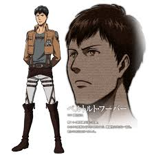

The main protagonist of the series. Idealistic, hotheaded, aggressive, and impulsive, Eren seeks to annihilate the Titans and explore the outside world. As a child, age 9, he killed two of the kidnappers who murdered Mikasa's family and convinced Mikasa to fight and kill the third one while he was being strangled by the latter. He and his father came looking for her after finding her parents' bodies. He was ranked 5th in his trainee class, having no particular talent aside from his excellent close combat skills, but has been slowly but steadily improving his grades through outstanding effort and a strong sense of purpose. Following his mother's death, Eren has a brief encounter with his father who entrusts him with a key to their old house's basement in Shiganshina, claiming that he must reach it by whatever means necessary, but is not informed by him about what really is hidden there. Later it is revealed that Eren possess the strange ability to summon and control the body of a 15 meter class Titan. Eren believes this ability to be the result of injections given to him by his father after the death of his mother, although there are indicts that he had those powers way before it. He initially had little control over the Titan body that he summons, and would attack anything that he sees while in this form but after further use he gained full control. When the Titan's body can no longer be maintained, Eren emerges from the nape of the Titan's neck (the common weak point of all Titans), where his body is fused to the Titan. When encountering the Titan that devoured his mother years earlier during his kidnapping by Reiner and Bertholdt, Eren suddenly develops a new ability to mentally control other Titans. After first subconsciously directing a group to kill and devour the Titan that killed his mother, he then directs the Titans to attack the Armored Titan so he and his friends can escape back to within the Walls. Author Hajime Isayama stated that Eren's Titan form's physique was modeled after middleweight mixed martial artist Yushin Okami.
Adopted child of the Yeager family. Mikasa is half-Asian and is the last known Asian living within the Walls after they were wiped out by the Titans. Before she was adopted by the Yeagers, Mikasa and her mother were targeted by slave traders due to their race. However, after the slavers killed her father, Mikasa's mother lashed out to defend her daughter, resulting in her death. Mikasa was saved by Eren after he found them and killed the slavers. Due to this incident, she is very protective of Eren, and will follow him no matter the circumstances. She was ranked first in her graduating class, and usually has a composed demeanor. She is considered an unprecedented genius, a prodigy who excels in the most difficult courses. She is often teased about her attachment to her foster brother.
Eren's best friend, he is physically frail and relatively intrepid. Though his strategic intuition has saved Eren and Mikasa several times, he continues to believe himself completely incompetent and hates himself for having to rely on them. Armin has sub-par physical aptitude by soldiers' standards but is an alleged genius when it comes to theoretical courses. It was Mikasa who finally snapped Armin out of his belief of being incompetent by pointing out that his strategic intuitions have always saved her and Eren in the past and he should have more faith in himself. Armin became more self assured and since then, with his quick wits making of him an invaluable asset to his peers.
Ranked 2nd of the trainee class, is considered strong-willed with a solid constitution and most adept at gaining the trust of his comrades. It is eventually revealed that he is the Armored Titan, who accompanied the Colossus Titan on the attack that destroyed the gate at Wall Maria. Due to his camaraderie with the graduates, he is beginning to experience fugues that separate his identity as the Armored Titan and his identity as Reiner.
|  | |
Ranked 3rd of the trainee class. Highly proficient in various hand to hand combat styles. He seems to have great potential but lacks in self-confidence and has a tendency to leave it to others whenever it comes to showing assertiveness. It is eventually revealed that he is the infamous 60 meter tall Colossus Titan who destroyed Wall Maria five years prior. Reiner implies that he has a crush on Annie due to his tendency to stare at her.
Ranked 4th of the trainee class. A stoic girl whose father trained her in hand to hand combat. She strikes with a perfect penetration angle. She is a solitary type, and solidarity does not come to her easily. She is ultimately revealed to be the Female Titan, discovered by Armin when they attempt to infiltrate the city. After being defeated by Mikasa, Annie encases her body in a crystal, that involves her entire body summoned with her Titan powers. Coming from the same town as Reiner and Bertolt, it was also implied that in spite of her stoic nature, she was close friends with Mina Carolina.
The Military Police Brigade (憲兵団 Kenpeidan?) is composed of elite soldiers assigned to protect the king and enforce law at the capital, which is located inside Wall Sina. Every year, the ten best ranked students from the Trainee Class are invited to join them (according to the conversation between Hitch and Boris, there are other illicit ways to get in such as fraternization and favoritism, etc.). In theory, the Military Police are the most skilled soldiers within the Military but in practice, they have become a lazy and corrupt group that takes advantage of the powers that's been granted to them. The middle classes of Wall Sina are only slightly aware of their corruption which the Military Police discreetly do their illegal activities but the lower labor workers and refugees do know a lot more and hold simmering hostility against them because they pilfer taxes and mismanages the lands. Despite being seen as an incompetent organization, most trainees still dream of joining the Military Police because it gives them a chance to live within the safety of Wall Sina. Unlike the Survey Corps and Garrison, the Military Police lack experience in fighting against Titans. This was demonstrated when most of them were afraid and utterly clueless on what to do when the Female Titan appeared and went on a rampage in Wall Sina. And when the King ordered the Military Police to assist the Survey Corps in rescuing Eren, most of them were easily killed by the Titans even before the rescue operation began in earnest.
Commander of the Military Police Brigade. During Eren's tribunal, Nile wanted Eren to be handed to the Military Police Brigade and executed, believing his presence may cause a civil war but Supreme Commander Darius gave him to Commander Erwin and the Survey Corps. When the Female Titan suddenly appeared within Wall Sina, Nile angrily demands an explanation from Erwin, suspecting he is planning a coup. Bur after learning about Erwin's plans, he decides to help by ordering the Military Police to assist the Survey Corps in capturing the Female Titan.
A member of Military Police who joined for honorable reasons. Marlo is aware of the corruption within the Military Police and has lengthy plans to reform the organization when he becomes the new Commander. Annie respect his idealism since he reminds her of Eren. Despite his noble goals, he lacks the will and strength to fight corruption when he was unable to stop two corrupt superiors for selling guns to black marketers.
A member of Military Police who joined to benefit from the corruption within the organization. A sarcastic hedonist, she is rather lazy and tends to mock her colleagues. Hitch is jealous of Annie which Boris suspects given her attitude. Unlike Annie, who was able to join the Military Police due to being the top ten of her class, Hitch only got in the Military Police by having an improper relationship with a superior. Despite her attitude, Hitch also cares about her colleagues when she was able to convinced two corrupt superiors to not arrest and let Marlo go after the latter tried to stop them for selling guns to black marketers.
The Garrison (駐屯兵団 Chūton Heidan?) are the soldiers that protect the towns and reinforce the walls. They are the first line of defense against the Titans maintaining a defensive stance. They are by far the largest force in the military due to the small number of members in the Military Police Brigade and the high death rate of the Survey Corps. Before the fall of Wall Maria, the Garrison were lazy, undisciplined and at times unreliable, only slightly better than the Military Police Brigade. After the fall of Wall Maria, they've become innovative, tactical, diligent and more reliable. They and the Survey Corps are currently the most reliable military branches.
Highest Ranked Administrator of the Southern Region Military. While mostly seen as an eccentric, drunken fool, Pixis is an intelligent man who cares about his soldiers and the people they protect. Upon learning about the breach at Trost, he and his men immediately heads there and manages to stop Commander Weilman from shooting Eren after he is revealed to be able to transform into a Titan. Seeing Eren's Titan powers might help seal the breach at Trost, he manages to rally his soldiers who were earlier on the verge of deserting to protect Eren during his mission.
A Garrison soldier who saves Eren and Mikasa during the prologue, who later goes on to become a Garrison commander. He owes and seeks to repay a debt to the Yeager Family for saving his own wife and family from a deadly disease. Hannes assisted Mikasa and the other Survey Corps in rescuing Eren from Reiner and Berthold. He would later die fighting the Titan that ate Carla Yeager, which leaves a profound effect on both Eren and Mikasa.
The squad leader of the 1st Division Elite Force in charge of protecting Eren during their mission to reclaim the Trost District. She is the sole survivor of the division. Rico has short grey/blonde hair, glasses, and wears the Stationary Guard uniform. Originally skeptical of Eren and his credibility, she eventually comes to acknowledge him as a useful ally, but still regards him as a threat; testifying against him at his trial. Despite her stoic nature, she appears to care greatly about her comrades, frequently reminding Eren that the people risking their lives for him have families and personalities, and that she doesn't wish for them to "die in vain." She becomes emotional when the mission is successful, as she is glad that her squad's dying efforts were not wasted.
The Survey Corps (調査兵団 Chōsa Heidan?) is composed of expeditionary soldiers that fight the Titans in their own territory outside of the walls. Their main goal is to discover more about the origins and source of the Titans, their motives, and weaknesses; ultimately how to fight and defeat them. They are also an integral component in the military's campaign to recapture Wall Maria.
Commander of the Survey Corps, who led the last mission before the fall of Wall Maria. After realizing that a traitor is hidden among the military ranks, he leads the 57th expedition with the secret objective of exposing and capturing it, hiding its true purpose from all the cadets and even from his most trusted subordinates. After Eren is kidnapped by Bertolt and Reiner, he leads a team to rescue him, having his right arm eaten by a Titan in the occasion. Aside from being a cunning strategist, Erwin is also a skilled soldier, able to fell a Titan even after losing his arm.
A scientist studying the Titans, showing no real fear in them and intense interest in Eren's new physiology as a Titan. Considered weird by the rest of her comrades, only a few tolerate her obsession with Titans. In the past, she used to have a strong hatred against Titans until the death of her comrade Ilse convinced her to see the Titans in a different light. Hange is not only responsible for the research the Survey Corps have on the Titans but also the special weapons they use, such as a barrel that fires multiple grappling hooks to capture Titans alive.
He is known as humanity's most powerful soldier and head of an elite squad in the Survey Corps. He is a clean-freak. While it is said that he is blunt and unapproachable, it is noted that he has a strong respect for authority, structure and discipline. He also cares about his underlings and is affected by their deaths, particularly Petra's. The sidestory Attack on Titan: A Choice With No Regrets focuses on Levi's origins, revealing that he was part of a band of thieves using the Vertical Maneuvering Equipment to commit crimes before he is scouted by Erwin to join the army.
The Titans (巨人 Kyojin?) are the primary antagonists of the series. They are large creatures closely resembling male humans with various deformities such as over- or under-sized heads and limbs, resulting in unnatural proportions. They also possess more teeth than normal humans, due to an extremely large mouth. In addition, they posses varying levels of intelligence, and for the vast majority, can only communicate through primitive grunts and screams. They can range from 3–15 meters tall, with some exceptions (ranging up to 60 meters). Despite their enormous strength and toughness, Titans' bodies are unnaturally light for their size. The Titans appear to have no objectives other than killing and consuming humans, which they do only by instinct, as they do not seem interested in attacking other animals. They survive on sunlight and do not need to eat or drink to survive - they actually lack any digestive organs, forcing them to occasionally regurgitate consumed prey. The Titans possess no visible reproductive organs, thus it is unknown how they keep increasing their numbers. Dead Titans' corpses decay at an extremely fast pace. They have hard skin and regenerative abilities, and can only be killed by causing a deep incision on the back of the neck. This weakness led to the development of the Vertical Maneuvering Gear, allowing humans to navigate quickly in a three dimensional space to access the Titans' weak point. The creatures are at numerous points mentioned to have exceptionally high body temperature. As a result, their bodies emit steam when regenerating, decaying, or under heavy exertion; the Colossus Titan's body emits steam constantly. Some humans, such as protagonist Eren Yeager, have the unique ability to summon and control a Titan body. The transformation's trigger is best understood as being injured enough to draw blood (usually a self-inflicted bite to the hand) while having a clear, specific goal in mind. While in this form, the human's normal body rests in the weak point at the base of the neck, connected via masses of muscular tissue, indicating a connection between the sentient and feral Titans. Certain Titans are noted to be Abnormal (奇行種 Kikō-shū?), acting in a way that is not normal for Titans, such as not eating humans directly but acting in a way to help their fellow Titans.
The largest Titan ever encountered, having first appeared in the Year 845 outside the District of Shiganshina. It is approximately 60 meters tall with a physical appearance resembling a humanoid being without any skin, exposing muscles and connective tissue. In addition, it has not shown any interest in consuming humans.It appears suddenly and without warning in a flash of lightning, and disappears in a similar manner in large clouds of steam, which constantly pours from most parts of its body. It possesses the ability to release this steam at high pressure to defend the weak point at the base of its neck. Possessing a physical mass far larger than any other known Titan, it was easily able to kick down the Gate into the District of Shiganshina and thus is partially responsible for the breach of Wall Maria. It displays cognitive recognition when it appears before the District of Trost in the year 850, as after kicking down the gate into the district, it destroys the cannon artillery atop the wall so that the invading Titans would meet less resistance. Later it is revealed that the Colossus Titan is Bertolt Hoover's Titan transformation.
The Abnormal Titan that destroyed the inner gate of Shiganshina, allowing the other Titans to breach Wall Maria and force humans into Wall Rosé. It seems much more athletic than the other Titans, as it can sprint and tackle, using this attack to destroy the gate. Its entire body is covered in protective armor plating except for some weak points at its joints, which were used by Mikasa to damage it during its fight with Eren. Later, it is revealed that the Armored Titan is Reiner Braun, who defeated Eren with Bertolt's help before the duo escape, taking the unconscious Eren and Ymir with them.
A 14-meter tall Titan with a previously unheard of feminine body structure, encountered during the expedition to Wall Maria. She possesses obvious intelligence, extensive knowledge of hand-to-hand combat, and the ability to selectively regenerate or harden parts of her body during battle. Leading numerous other Abnormal Titans, she attacks the expedition forces in search of Eren and attempts to kidnap him. She slaughters the forces sent to fight her, with only Levi, Mikasa, and Armin surviving direct contact with her. Later, Armin is able to lead her into a trap and confirm that her true identity is Annie Leonhardt.
Attack on Titan (進撃の巨人 Shingeki no Kyojin?, lit. "Advancing Giants") is a Japanese manga series written and illustrated by Hajime Isayama. The series began serialization in Kodansha's Bessatsu Shōnen Magazine magazine from September, 2009 and is published in North America by Kodansha Comics USA. A spin-off light novel began release from December 2011 and has also received a manga adaptation. A television anime adaptation produced by Wit Studio and Production I.G aired in Japan on MBS between April and September 2013. A live action film adaptation is also in production. Four video game adaptations developed by Nitroplus staffers in collaboration with Production I.G were announced to be released as bonus content for the third and sixth volumes of the Blu-ray Disc release of the anime. Another game is being developed by Spike Chunsoft for the Nintendo 3DS. The manga series has become a commercial success, selling over 20 million volumes as of mid-2013. The release of the anime also saw a boost in the series' popularity with several writers receiving critical acclaim for its atmosphere and story. Although it also gained fame in neighboring Asian countries, the series's themes have been a subject of controversy.
You may contact us if you have any concerns about our page.
Contact number:09264618869
email address:aot@yahoo.com